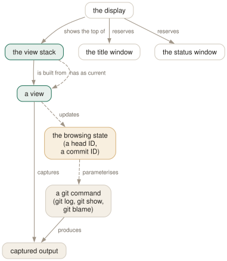

Day 01
The viewer model
A view is a git command's output, and views live on a stack.
By the end of today you can
- say what a tig view actually is, and name the git command behind the one you are looking at
- open, stack and close views without ever being unsure which key gets you out
- read the title window: which view, which commit, how far down, still loading
tig is a reader, not a git client
tig does not reimplement git. Every screen you will see is the captured output of a git command that tig ran on your behalf, parsed just enough to colour it and to know which line is a commit. Hold onto that and the rest of the tool stops being surprising.
The main view is git log with a --pretty format tig chose. The diff view is git show. The blame view is git blame, the tree view is git ls-tree, the grep view is git grep. When something looks wrong in tig, the first question is what the underlying command would have printed — and usually you can run it yourself and find out.
This is also why tig is safe to explore. Reading is all it does by default. The few keys that change your repository are a short list, they live in the status and stash views, and you will meet them deliberately on Day 6 and Day 9.

A view is a screenful with a command behind it
There are fourteen view types. You will use five of them constantly and meet the rest as they become useful. Today only three matter:
- m main
- One line per commit: date, author, and the first line of the message, with branch and tag names in brackets. This is the view tig opens with, and the one you will live in.
- d diff
- The selected commit in full: message, diffstat, patch. Opening it from the main view is the single most common thing anyone does in tig.
- s status
- Your working tree — staged, unstaged and untracked files. This is the view that replaces
git add -p, on Day 6.
The remaining nine — log, reflog, tree, blob, blame, refs, stash, grep, pager, help — arrive on Days 8, 9 and 10. h opens the help view at any time, and unlike a printed key list it shows the bindings that are actually live, including any you have added yourself.
The stack, and the two ways out
Views do not replace each other. Opening one pushes it onto a stack, and the view you came from is still sitting underneath with its cursor where you left it.
tig press d press s
┌──────────┐ ┌──────────┐ ┌──────────┐
│ main │ │ diff │ │ status │ <- what you see
└──────────┘ ├──────────┤ ├──────────┤
│ main │ │ diff │
└──────────┘ ├──────────┤
│ main │
└──────────┘
q pops one level Q drops the whole stack and exits
q closes the top view and reveals the one below; press it enough times and the last close quits tig. Q quits immediately from any depth. Getting these two straight on the first day saves a great deal of confused key-mashing later.
The two windows that are always there
Whatever view is on top, the bottom two lines of the terminal belong to tig itself.
2026-03-05 16:00 Ada Lovelace ●─╮ [master] Merge branch 'feature/parser'
2026-03-03 09:30 Ada Lovelace │ ∙ [feature/parser] Implement parse()
2026-03-02 11:00 Ada Lovelace │ ∙ Add parser header
2026-03-04 14:00 Ada Lovelace ∙ │ Start the manual
2026-03-01 10:00 Ada Lovelace ◎─╯ <v1.0> Initial import
The title window is the second line from the bottom and answers three questions at once: which view you are in ([main]), what the browsing state currently points at (the full commit ID), and where you are in the view (commit 1 of 5, and a percentage on the right). If a view takes more than three seconds it also appends loading 5s and counts.
The very last line is the status window. It is blank most of the time and is where tig puts errors, prompts and the output of commands that report a single line. It is the only place some failures are ever mentioned, so when a key seems to do nothing, look there first.
Browsing state: what the cursor quietly carries
tig tracks two identifiers as you move: a head ID (the revision the history views were opened against, HEAD by default) and a commit ID that follows the cursor and changes every time you highlight a different line.
That pair is why child views feel telepathic. Pressing d does not ask which commit you meant — the commit ID already says. Reopening the diff view reloads it only if the commit ID changed since last time, which is what makes arrowing down a commit list with a diff open feel instant rather than laggy.
Today's habit
Replace one reflex, today: git log becomes tig. They take the same arguments — tig --oneline and tig -p both work, because the options go straight through to git log — so the substitution costs you nothing and you get a navigable list instead of a pager full of text.
Tomorrow: the main view in detail, including the three rows at the top that look like commits and are not.
New vocabulary
Keys
| Key | Does |
|---|---|
| m | Open the main view — the one-line-per-commit list. |
| d | Open the diff view for the selected commit. |
| s | Open the status view: the working tree. S does the same. |
| h | Open the help view: every binding that is live right now. |
| q | Close this view and fall back to the one underneath. Quits if it is the last. |
| Q | Quit immediately, however deep the stack. |
| R | Reload the current view by re-running its git command. |
| v | Show the version — and prove which build you are on. |
| z | Stop all background loading. For when you opened a 200,000-commit history. |
Commands
| Command | Does |
|---|---|
tig | Open the main view for the current branch. |
tig status | Start in the status view instead. |
tig -C <path> | Run as if started in path. |
tig -v | Print the version and exit. Also reveals the optional features built in. |
Drillsdo these in a real terminal, today
Self-check
Answer out loud first, then unfold.
You press q expecting to leave tig and instead land in a different view you do not remember opening. What happened?
q is view-close, not “quit”. Views stack: opening the diff view from the main view leaves the main view underneath rather than replacing it. Closing pops one level, so you surface through the views you opened, in reverse order.
The view you landed in is the one you opened first and forgot about — often the main view from before a detour through status. Q is the unconditional exit, and it is the key to reach for when you want the shell back rather than the previous screen.
Two people run tig in the same repository at the same moment and see different commit lists. Neither has committed anything. How?
A view is not a window onto a database that tig maintains. It is the output of a git command, captured once, when the view opened. The main view runs git log with whatever revision arguments were on the command line, and holds the result.
So tig and tig --all disagree, and so do two instances started either side of a git fetch. R re-runs the command; until you press it, you are reading a snapshot.
The title window says [main] … - commit 1 of 61 loading 5s. What is tig waiting for, and what can you still do?
It is waiting for git log to finish writing. tig reads the pipe incrementally and renders what has arrived, so the view is usable while loading. The loading 5s suffix only appears once a view has taken more than three seconds.
You can navigate and open child views on the commits already loaded. If you do not need the rest — and in a large repository you rarely do — z stops every background load at once.
Why is there no “refresh everything” key, and why does tig sometimes update without being asked?
Because refreshing means re-running a git command per view, which is expensive on a large repository. R reloads the current view only, deliberately.
The unasked-for updates come from refresh-mode, which defaults to auto: when tig notices a modification made through another view — you staged something — it refreshes the views that care. Day 14 turns this down for repositories where it costs too much.
Cheat sheet
Day 1 in eight lines. Everything else this fortnight is elaboration.
tig # main view: git log, navigable
tig status # start in the working-tree view instead
tig -C ~/repo # run as if started somewhere else
m d s # open the main / diff / status view
h # help: the bindings that are live right now
q # close this view (pops the stack)
Q # quit, however deep you are
R # reload: re-run this view's git command
z # stop background loading on a huge history
Everything through Day 01
Keys
| Key | Does |
|---|---|
| m | Open the main view — the one-line-per-commit list. |
| d | Open the diff view for the selected commit. |
| s | Open the status view: the working tree. S does the same. |
| h | Open the help view: every binding that is live right now. |
| q | Close this view and fall back to the one underneath. Quits if it is the last. |
| Q | Quit immediately, however deep the stack. |
| R | Reload the current view by re-running its git command. |
| v | Show the version — and prove which build you are on. |
| z | Stop all background loading. For when you opened a 200,000-commit history. |
Commands
| Command | Does |
|---|---|
tig | Open the main view for the current branch. |
tig status | Start in the status view instead. |
tig -C <path> | Run as if started in path. |
tig -v | Print the version and exit. Also reveals the optional features built in. |